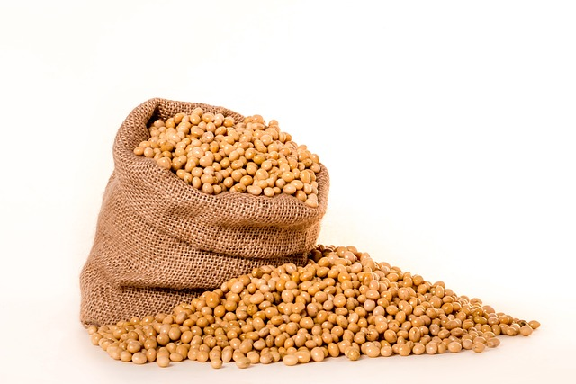

Sobre o Agrinho

A produção da soja é feita a partir de etapas. São elas: planejamento agrícola, preparo, semeadura, manejo, colheita, beneficiamento do grão e armazenamento. Como você viu ao longo deste texto, a produção da soja é uma das etapas da cadeia produtiva da soja, e a sua produção também envolve importantes etapas.
Desafios
A cultura da soja proporcionou uma grande revolução alimentar. Hoje não existe nenhuma outra proteína de origem vegetal com melhor custo benefício para a produção de carnes, ovos, leites e derivados do que soja. A demanda por proteína animal tem crescido substancialmente nas últimas décadas e seguirá crescendo, principalmente, graças à melhoria de renda das pessoas nos países asiáticos. Portanto, além de garantir proteína animal em grandes quantidade e preços acessíveis aos brasileiros, a soja também é importante para a segurança alimentar de muitas outras nações.
Mas não para por aí. A soja está presente quando se come um ovo frito, uma mandioquinha e batata fritas, já que a maior parte do óleo vegetal no país vem da soja. Deste mesmo óleo vegetal, tem saído mais de 70% da matéria prima para produzir o biodiesel brasileiro, hoje em mistura de 10% no diesel nacional, reduzindo as emissões de gases do efeito estufa. A soja também dá origem a diversos produtos para consumo de pessoas vegetarianas ou com intolerância a lactose, inclusive lactantes, bem como a produto de tratamento hormonal. A oleaginosa ainda está presente em maquiagens, tintas e até nos colchões de espumas através de um polímero (poliol).
Contribuição
A produção brasileira de grãos na safra 2022/23 pode chegar a 309,9 milhões de toneladas. Quase metade desse volume total é resultado das lavouras de soja, o que representa uma colheita em torno de 151,4 milhões de toneladas, como mostra o 6º Levantamento da Safra de Grãos 2022/23, divulgado nesta quinta-feira (9) pela Companhia Nacional de Abastecimento (Conab). Se confirmado, o volume de soja a ser colhido nesta temporada é 20,6% superior ao registrado no ciclo anterior, o que aponta uma recuperação na produtividade das lavouras que foram atingidas pelas condições climáticas adversas no período de 2021/22.
Relogio
Tempo restante
7
dias
7
horas
7
min
7
seg